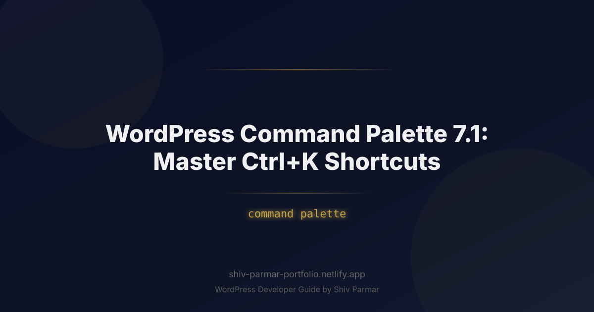

WordPress Command Palette 7.1: Master Ctrl+K | Shiv Parmar
Table of Contents
Every WordPress professional knows the silent productivity killer lurking inside wp-admin: the endless labyrinth of nested menus. For decades, updating a theme template, toggling a plugin setting, or editing a custom post type required a multi-step click sequence across disjointed screens. In an era where developer environments like VS Code and launcher tools like Raycast or Alfred set the standard for instantaneous, keyboard-driven navigation, the traditional WordPress dashboard began to feel hopelessly tethered to the mouse.
Enter the WordPress Command Palette. First introduced to streamline Site Editor interactions and now deeply integrated across modern WordPress releases, this tool transforms how creators, engineers, and digital agencies interact with the world's most popular content management system. Triggered by a simple keystroke—Ctrl+K on Windows/Linux or Cmd+K on macOS—the Command Palette eliminates friction by providing a contextual, searchable command interface directly inside the WordPress workspace.
Mastering this single shortcut is not merely about shaving half a second off your page loads; it fundamentally reconfigures your daily editorial and development velocity. Whether you are managing complex block hierarchies, toggling full-site editing modes, or registering custom client-facing actions using the WordPress Command API, this guide will show you how to leverage the Command Palette to unlock unprecedented levels of WordPress productivity.
What is the WordPress Command Palette?
The WordPress Command Palette is a unified, modal-based search and execution hub built directly into the Gutenberg core architecture. Inspired by command-line interfaces and modern developer software, it delivers a floating execution bar over the active interface whenever summoned via Ctrl + K or Cmd + K.
Unlike standard administrative search bars—which generally perform standard database queries for post titles or media attachments—the Command Palette is an omni-functional operational engine. It understands both navigation and action. Typing into the palette allows you to jump directly to deep-seated editor views, trigger state changes (such as opening the code editor or toggling distraction-free mode), manipulate template parts, and execute contextual block modifications without taking your fingers off the home row.
Under the hood, the Command Palette is driven by the @wordpress/commands JavaScript package. This architecture decouples search logic from UI rendering, operating atop the core Gutenberg Redux-style data store (@wordpress/data). The system continually indexes registered actions, available site entities, and context parameters. As a result, the palette remains context-aware: summoning it while editing a single blog post offers distinct, relevant actions compared to summoning it while configuring global styles within the Site Editor.
Crucially, the Command Palette is fully extensible. Just as WordPress developers historically registered custom hooks, post types, and REST API endpoints, modern developers can hook into the Command Palette API to expose custom administrative actions, agency workflows, client portals, and third-party plugin configurations.
Why the Command Palette Matters in 2026
The web development landscape has reached an inflection point where speed of iteration dictates commercial success. In 2026, WordPress has expanded far beyond simple blogging; it powers complex enterprise portals, decoupled headless frontends, dynamic block-based design systems, and hyper-customized web applications. Within these expansive environments, visual navigation becomes a bottleneck.
Here is why mastering and extending the Command Palette has shifted from a novelty to an essential workflow standard:
- Mitigating Site Editor Complexity: Full-Site Editing (FSE) has consolidated design controls, style variations, template hierarchies, and block patterns into a single interface. However, navigating deep into nested template parts (like footers, single-query loops, and synchronized patterns) through mouse clicks alone requires cognitive overhead. The Command Palette flattens this multi-layered hierarchy into a single, fuzzy-searchable prompt.
- Keyboard-First Ergonomics: Repetitive strain injury (RSI) and ergonomic fatigue are genuine hazards for professionals spending forty or more hours a week inside digital interfaces. Keyboard-driven workflows keep your hands aligned, reduce wrist deviation, and eliminate the constant physical switching between the keyboard and mouse or trackpad.
- Client Experience and Agency Delivery: Modern agencies build bespoke digital platforms for non-technical clients. By registering custom commands, agencies can provide a frictionless "concierge" experience. Instead of writing long documentation manuals instructing clients to navigate to Settings → Custom Fields → Integration Tabs → API Keys, clients can hit
Ctrl+K, type "Update API Keys," and instantly arrive at the correct panel. - Unification Across the Ecosystem: Modern operating systems (Windows PowerToys, macOS Spotlight) and developer platforms (GitHub, Linear, Raycast, Figma) have trained knowledge workers to anticipate universal search prompts. Implementing this standard inside WordPress ensures that working within the CMS feels fluid and aligned with modern software standards.
Step-by-Step Guide: Mastering the Ctrl+K Workflow
Achieving mastery over the Command Palette requires understanding not just how to activate it, but how to weave its contextual tools into your continuous production cycles. Follow this comprehensive walkthrough to progress from introductory navigation to advanced developer customization.
Step 1: Summoning and Interfacing with the Palette
Accessing the Command Palette requires no setup out of the box; it is an active core component. Depending on your platform and current view, you can trigger it through multiple entry points:
- Global Hotkey: Press
Ctrl + Kon Windows/Linux orCmd + Kon macOS anywhere within the Block Editor or Site Editor. - Title Bar Interaction: If you prefer visual access, click the magnifying glass icon or the search bar displayed prominently in the central top bar of the Site Editor.
- Escape to Dismiss: Hit the
Escapekey at any point to dismiss the modal and return your focus directly to the block or field you were previously editing.
When the palette launches, focus is instantly locked into the search input. You can type continuous strings; the underlying search engine uses fuzzy-matching algorithms, meaning you do not need to memorize exact command titles to reveal relevant actions.
Step 2: Core Built-In Commands and Context Switching
The built-in commands inside WordPress divide fundamentally into two categories: Navigation Commands and Action Commands.
Navigation commands manipulate your current URL and interface location. Rather than clicking back to the dashboard, finding a template, and waiting for the re-render, you simply invoke the palette and direct your destination:
- Type
Template: Singleto immediately switch context to your single-post layout file. - Type
Pagesto generate a real-time list of all published and draft pages across the install, selecting any to edit without leaving the canvas. - Type
Stylesto jump straight into global typography, color palette, or layout spacing adjustments.
Action commands, conversely, alter the state of your immediate workspace. They toggle environment variables, activate editor utilities, or restructure selected blocks:
Toggle distraction free: Instantly strips away all sidebars, toolbars, and top navigation modules for deep-work writing.Open code editor: Swaps the visual block canvas for the underlying HTML and block comment parser view.Toggle list view: Opens the document overview drawer, revealing the complete nested DOM tree of your current post.
Step 3: Comprehensive Shortcut and Command Cheat Sheet
To maximize efficiency, keep this quick reference table accessible until the keybindings become second nature.
| Command / Shortcut | Primary Scope | Functional Output |
|---|---|---|
| Ctrl/Cmd + K | Universal | Launches or dismisses the Command Palette interface. |
| "Open code editor" | Editor Canvas | Toggles between Visual Canvas and Raw HTML/Block representation. |
| "Distraction free" | Content Creation | Hides sidebars, header chrome, and non-essential visual elements. |
| "Show/hide list view" | Layout / Structure | Expands document hierarchy panel for complex block targeting. |
| "Template: [Name]" | Site Editor | Transitions immediately into the targeted site template without dashboard rerouting. |
| "Reset styles" | Global Styles | Clears custom global changes, reverting theme styles to theme.json defaults. |
Step 4: Registering Custom Commands via the Command Palette API
The true potential of the Command Palette manifests when you register your own commands. WordPress surfaces this feature through the @wordpress/commands package using React hooks or procedural JavaScript.
To register a custom command, enqueue an administrative script that ties into the wp-commands dependency. Below is a production-ready example demonstrating how to register a command that purges your server-side caching layer and alerts the editor:
import { registerCommand } from '@wordpress/commands';
import { __ } from '@wordpress/i18n';
import { trash as trashIcon } from '@wordpress/icons';
// Register a basic static command inside the WordPress Command Palette
registerCommand( {
name: 'custom-agency/purge-transients',
label: __( 'Purge Object Cache & Transients', 'custom-agency' ),
icon: trashIcon,
category: 'site-editor',
callback: async ( { close } ) => {
try {
const response = await fetch( '/wp-json/custom-agency/v1/purge-cache', {
method: 'POST',
headers: {
'X-WP-Nonce': window.wpApiSettings ? window.wpApiSettings.nonce : '',
'Content-Type': 'application/json',
},
} );
if ( response.ok ) {
alert( __( 'Cache purged successfully.', 'custom-agency' ) );
} else {
alert( __( 'Failed to purge cache. Please check server logs.', 'custom-agency' ) );
}
} catch ( error ) {
console.error( 'Error purging cache:', error );
} finally {
// Always close the palette modal once execution completes
close();
}
},
} );
To ensure this script loads in both the standard Post Editor and the Full Site Editor, register it correctly inside your theme or plugin's functions.php file using the enqueue_block_editor_assets action hook:
<?php
/**
* Register Command Palette customizations.
*/
function custom_agency_register_command_palette_scripts() {
$script_asset_path = plugin_dir_path( __FILE__ ) . 'build/index.asset.php';
// Check if dynamic asset metadata exists (generated by @wordpress/scripts)
if ( file_exists( $script_asset_path ) ) {
$assets = require $script_asset_path;
$dependencies = $assets['dependencies'];
$version = $assets['version'];
} else {
$dependencies = array( 'wp-commands', 'wp-i18n', 'wp-icons', 'wp-element' );
$version = '1.0.0';
}
wp_enqueue_script(
'custom-agency-commands',
plugin_dir_url( __FILE__ ) . 'build/index.js',
$dependencies,
$version,
true
);
}
add_action( 'enqueue_block_editor_assets', 'custom_agency_register_command_palette_scripts' );
Step 5: Dynamic Command Loaders for Context-Aware Interactions
Static commands are great for direct links or basic settings, but many operations depend on dynamic data. For example, if you manage a WooCommerce shop or a real estate listing site, you might want your editorial team to search for recent orders or listings directly within the Command Palette.
This is where Command Loaders come in. Rather than loading thousands of items into memory simultaneously, a Command Loader runs dynamic searches against the WordPress REST API based on the user's live keystrokes:
import { useCommandLoader } from '@wordpress/commands';
import { __ } from '@wordpress/i18n';
import apiFetch from '@wordpress/api-fetch';
import { postList as icon } from '@wordpress/icons';
export const useProductSearchCommandLoader = ( { search } ) => {
// Return early if the query string is too short to optimize performance
const shouldFetch = search && search.length >= 2;
const { records, isLoading } = apiFetch( {
path: `/wp/v2/product?search=${ encodeURIComponent( search ) }&per_page=5`,
} );
const commands = ( records || [] ).map( ( product ) => {
return {
name: `custom-agency/edit-product-${ product.id }`,
label: sprintf( __( 'Edit Product: %s', 'custom-agency' ), product.title.rendered ),
icon: icon,
callback: ( { close } ) => {
document.location.href = `post.php?post=${ product.id }&action=edit`;
close();
},
};
} );
return {
commands,
isLoading,
};
};
// Hook the dynamic loader into the Command Registry
useCommandLoader( {
name: 'custom-agency/product-search-loader',
hook: useProductSearchCommandLoader,
} );
This dynamic hook architecture keeps the palette lean, ensuring that browser memory consumption remains flat even on sites containing tens of thousands of database records.
Best Practices for Command Palette Productivity
Unlocking the full return on investment from keyboard navigation requires disciplined implementation habits, whether you are configuring the palette for yourself or deploying it to client sites.
1. Develop Muscle Memory Through Contextual Priming
Stop reaching for the mouse every time you need to switch templates. Force yourself to use the Ctrl + K shortcut iteratively throughout your workday. When you need to edit the site footer, press Ctrl + K, type "footer," and press Enter. By committing to keyboard navigation for one full working week, you internalize the command syntax, transforming fragmented editing routines into uninterrupted focus.
2. Standardize Agency Namespace Conventions
If you build tools for clients, avoid scattering arbitrary command labels across the palette. Group your agency commands under intuitive prefixes. For example, instead of naming an action "Clear Cache," name it "Maintenance: Purge All Caches." This ensures that when a user searches for high-level concepts like "Maintenance" or "Settings," all corresponding utilities gather neatly into a predictable command group.
3. Scope Commands Sensibly
Do not pollute the global search space with hyper-specialized actions. The Command Palette API provides contextual scoping parameters. If an action is only valid when an image block or a specific custom post type is active, configure your registration logic to evaluate the active editor context. This prevents visual clutter and keeps search results relevant.
4. Combine the Command Palette with Standard Block Shortcuts
The Command Palette does not replace block-level markdown shortcuts; it complements them. The ultimate editing workflow blends both:
- Use markdown syntax like
##for headings,-for unordered lists, and>for blockquotes directly inside the writing canvas. - Use
/(slash commands) to summon and drop distinct block elements into place without breaking your writing cadence. - Reserve
Ctrl + Kfor macro operations: document structure, template switching, toggling settings, and site-wide orchestration.
Common Mistakes to Avoid
While the Command Palette provides an efficient alternative to traditional administrative navigation, improper implementation can lead to friction, performance hits, and user confusion.
Overwhelming the Global Search Registry
Developers often get carried away by registering dozens of custom commands for edge-case features. If an editorial team must scroll past twenty rarely-used agency scripts to find their homepage template, the Command Palette loses its utility. Limit registered commands to high-frequency actions that measurably reduce navigation steps.
Neglecting User Capabilities and Permission Gates
A severe architectural error is exposing commands to users who lack the required administrative capabilities. If an action invokes an administrative REST API endpoint, verify user roles before registering the command on the frontend:
// Bad: Registering an administrative command without checking permissions
registerCommand( {
name: 'agency/delete-database-logs',
label: 'Delete Logs',
callback: () => runDeleteAction(),
} );
// Good: Only register if current user metadata supports the action
if ( window.currentUserCanManageOptions ) {
registerCommand( {
name: 'agency/delete-database-logs',
label: 'Delete Logs',
callback: () => runDeleteAction(),
} );
}
Displaying non-executable commands creates user frustration and risks leaking architectural details to low-privilege users (such as Contributors or Authors).
Keyboard Conflict Overrides
When extending the Command Palette, avoid assigning secondary native keyboard shortcuts that overwrite operating-system defaults or standard browser interactions. For example, hijacking Ctrl + S or Ctrl + D without providing appropriate fallback behavior or cross-platform key mapping disrupts user expectations and causes platform-specific usability issues between macOS and Windows.
Ignoring Fallback Support and Accessibility
The Command Palette is an accessibility triumph for keyboard-only users and those who navigate via assistive technologies. However, it should never become an exclusive single point of failure. Always guarantee that critical settings remain accessible through traditional GUI pathways—like the standard Settings sidebar or the primary admin dashboard. The Command Palette is an accelerator, not an architectural wall.
Conclusion
This guide covered everything you need to know about WordPress Command Palette 7.1: Master Ctrl+K Shortcuts. By following these steps, you can implement these solutions on your WordPress site today.
If you need help with WordPress development, WooCommerce, or performance optimization, feel free to reach out. I work with clients worldwide and deliver high-quality results.